Distribution of Frobenius elements in the Galois group for the 27 lines
Elements of E6 have 20 conjugagcy classes as elements of S27.
For each, we display the difference between the empirical (observed) fraction and
the actual fraction in E6 (vertical axis) and the logarithm of the corresponding prime.
The data points (circles) are blue
when the empirical fraction exceeds the fraction in E6, and red
when the empirical fraction is less than the actual fraction.
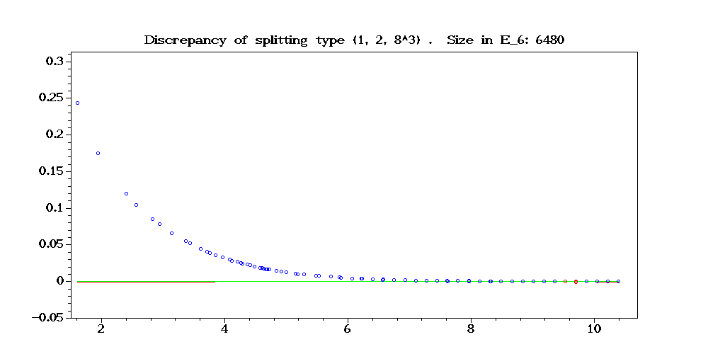
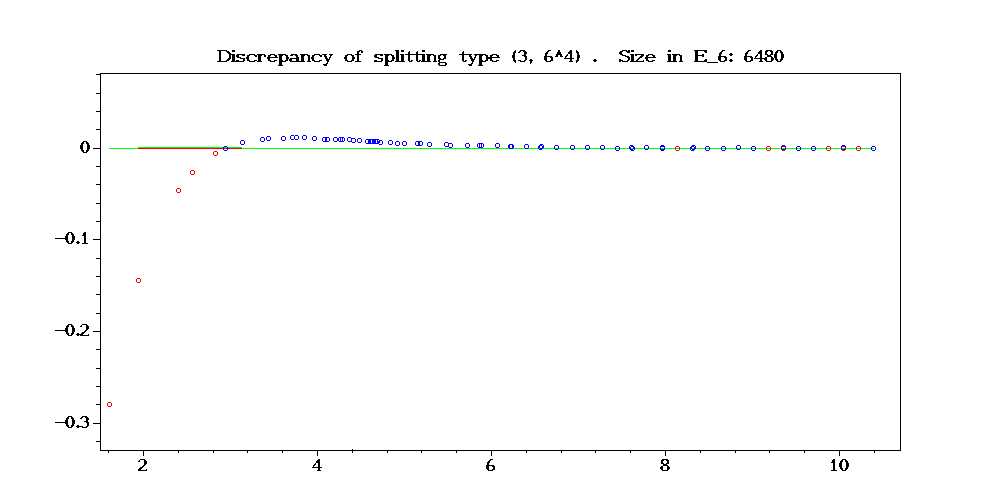
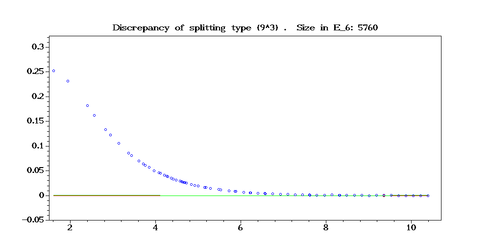
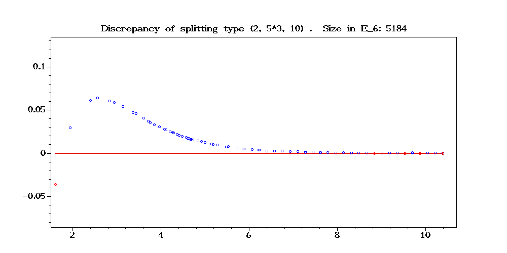
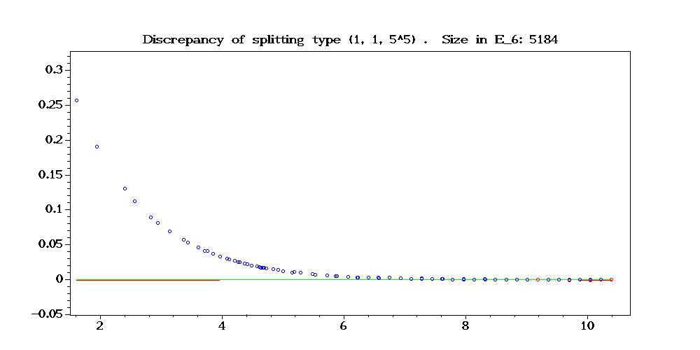
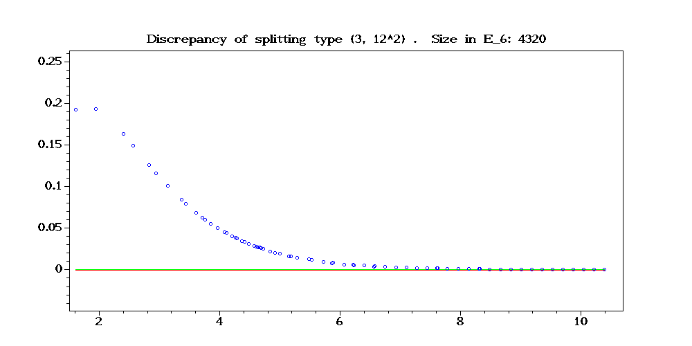
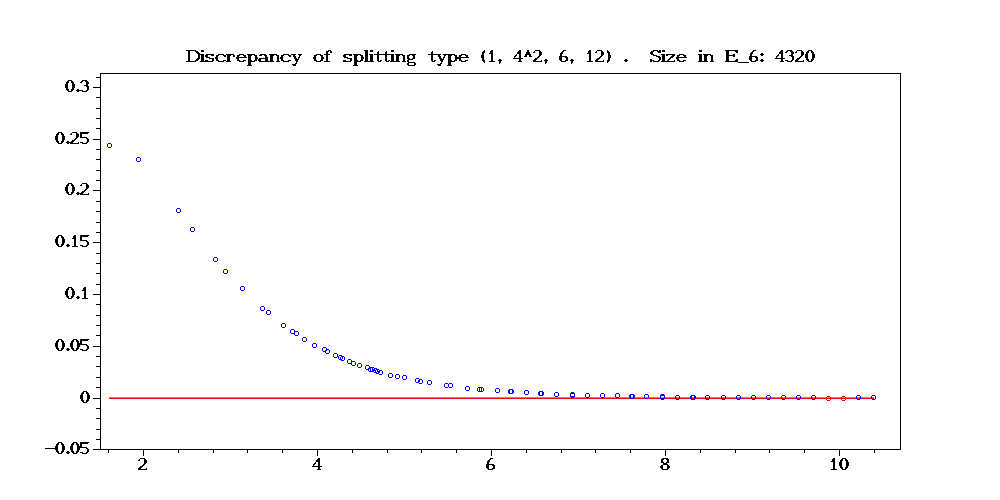
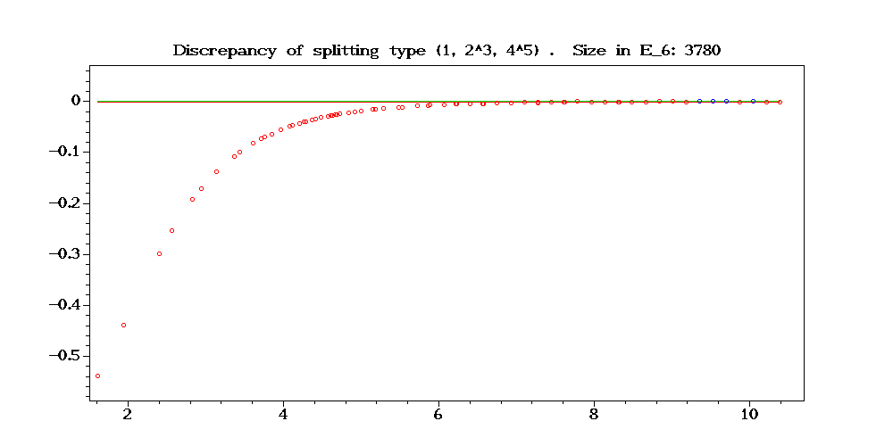
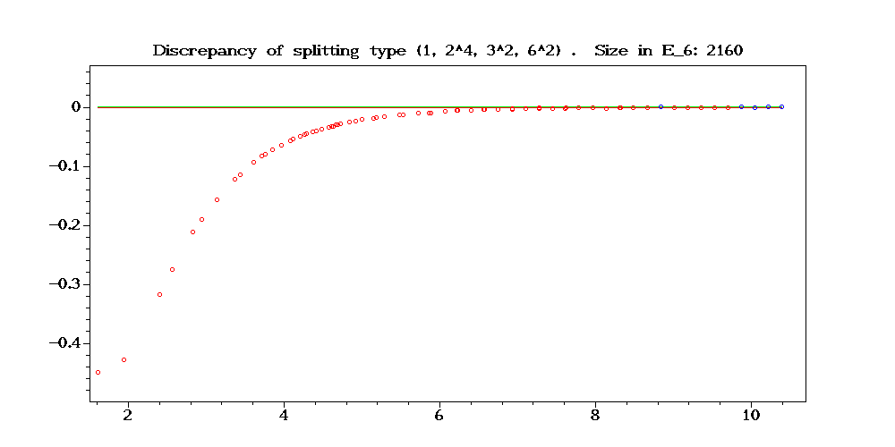
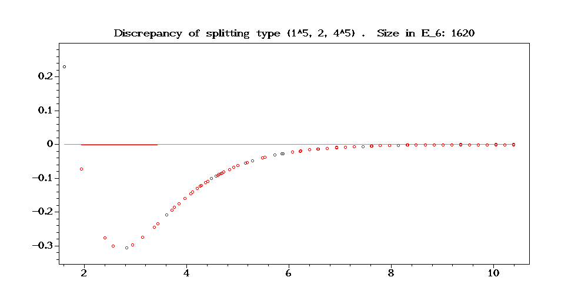
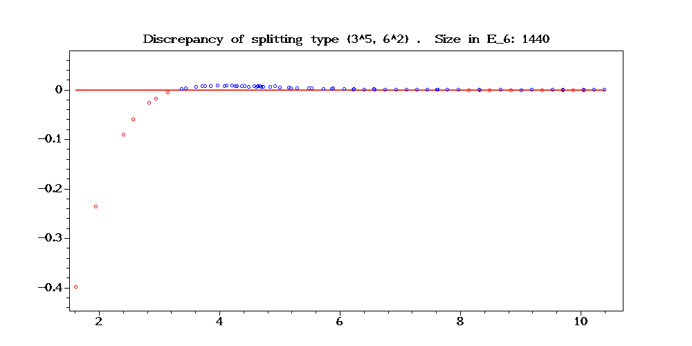
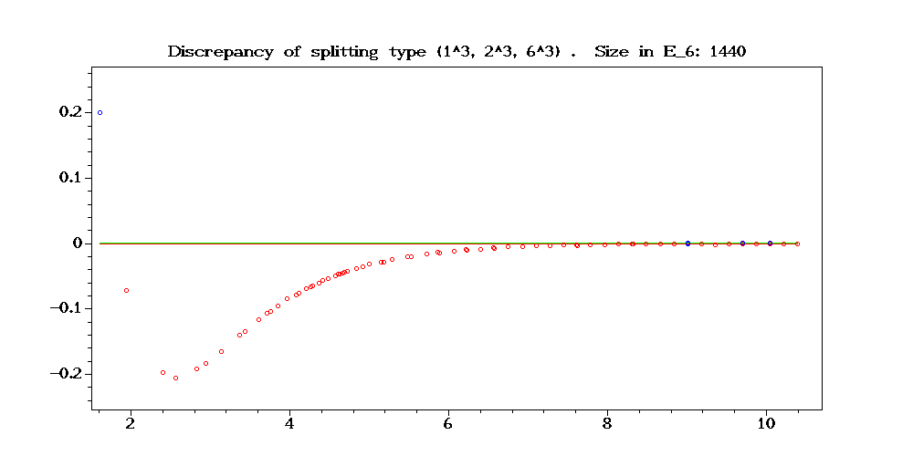
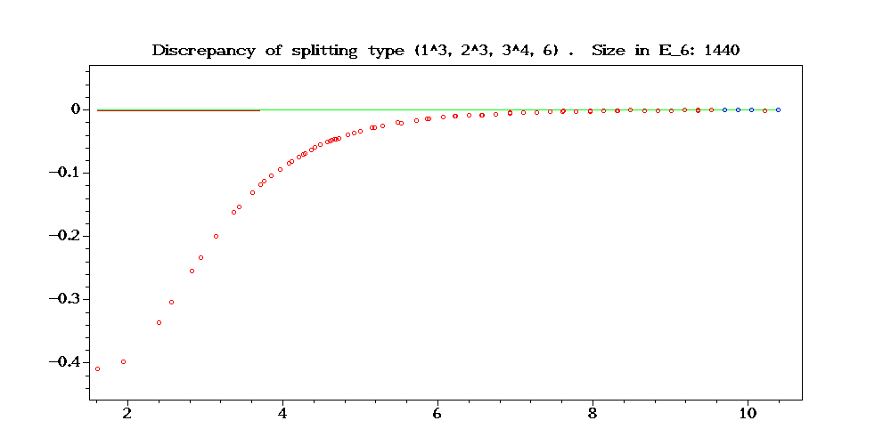
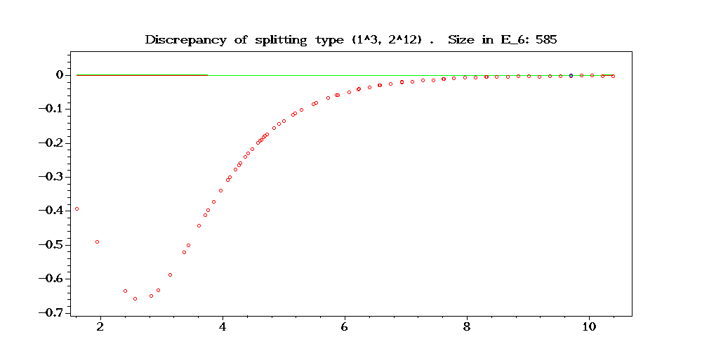
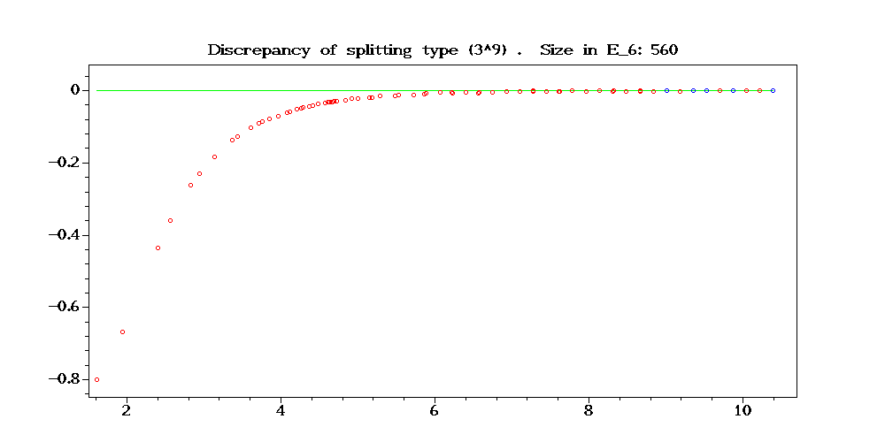
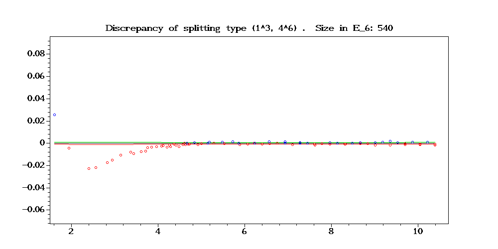
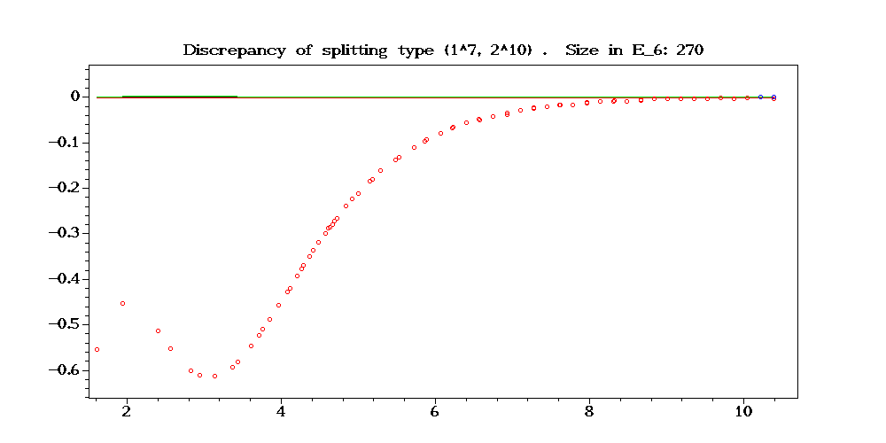
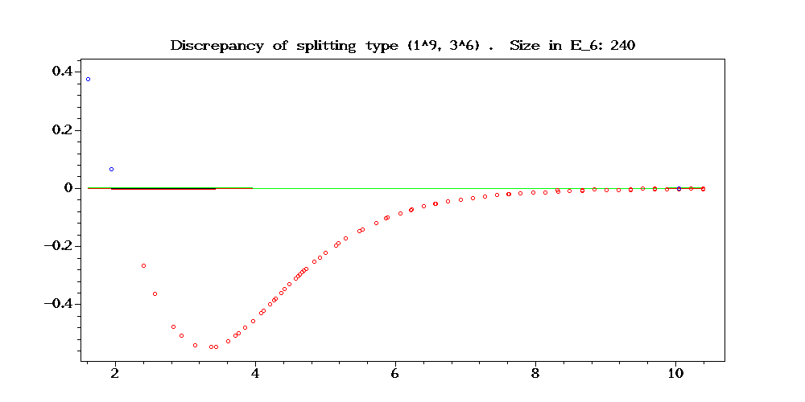
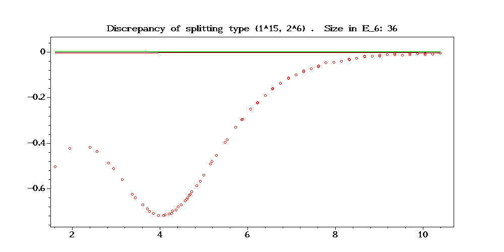
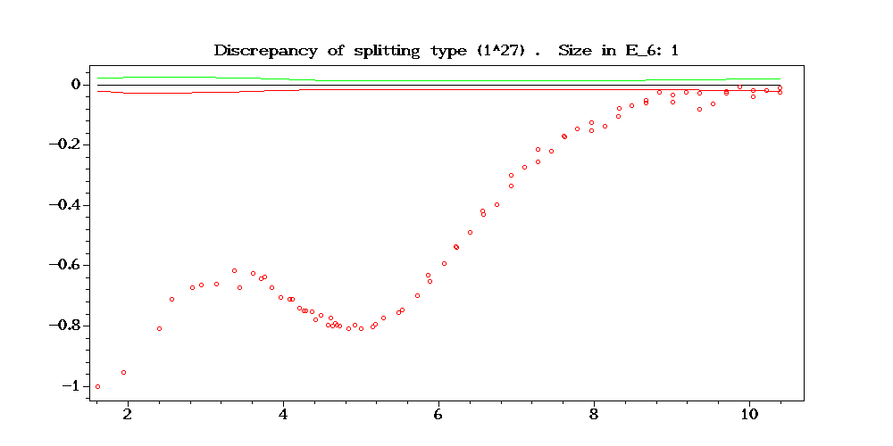